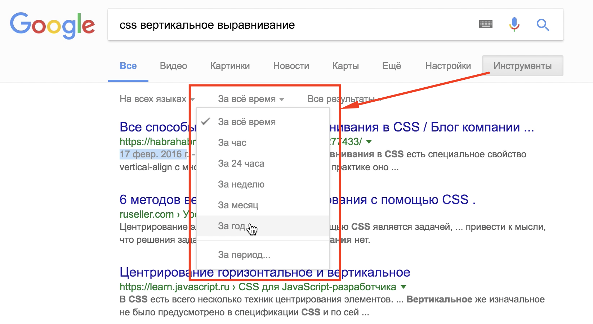
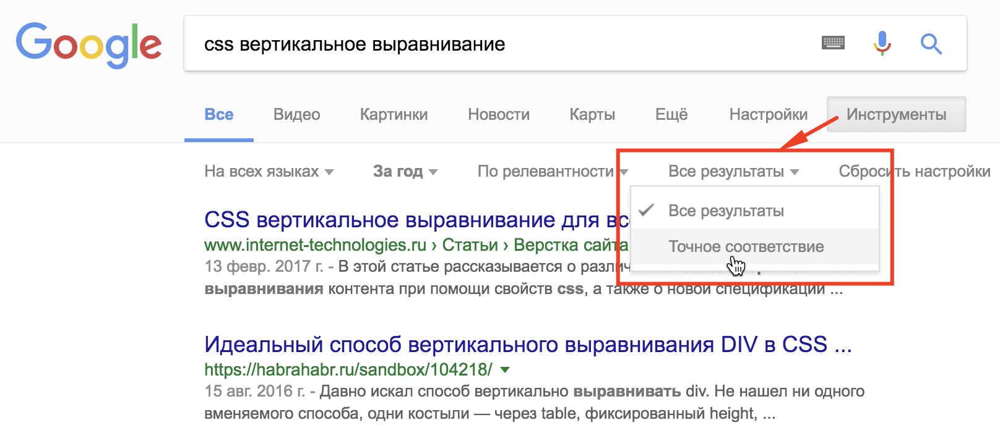

Сегодня мы затронем очень важную тему - правильный и эффективный поиск информации в поисковой системе Google. Данный материал будет полезен в первую очередь начинающим специалистам в области IT и ориентирован именно на поиск профессиональной или специфической информации, которую не так просто найти сходу, просто задав ваш вопрос поисковику.
Можно долго спорить относительно того, какую поисковую систему использовать. Мне не хотелось бы разводить холивар, однако уверен, что более 80% профессиональных разработчиков и специалистов предпочитают именно эту систему благодаря ее глубокой интеграции в англоязычный сегмент рынка.

Как показывает практика общения моих дорогих зрителей или гостей канала в комментариях на YouTube или в моем паблике вконтакте - очень много новичков по той или иной причине боятся или не хотят пользоваться поисковой системой, предпочитая задавать вопросы в комментариях. Не вижу в этом ничего плохого, я с радостью погуглю и отвечу комментом ниже. Однако, думаю причина этому не лень, а именно недоверие результатам поиска и банальный ответ "google в помощь" - не должен иметь столь ироничный окрас или служить личным оскорблением для тех, кому адресован.
Сегодня я покажу интересные методы и приемы поиска информации в Google, расскажу о правилах, которыми следует руководствоваться во время поиска и которыми пользуюсь сам.
В принципе, правильный поиск информации в Google задача не сложная, если подойти к этому вопросу подготовленным и сводится к ряду правил, которые мы сейчас рассмотрим. Обратите внимание, что данные правила более подходят именно для поиска специфической информации и будут полезны, в первую очередь, веб-разработчикам, дизайнерам, верстальщикам или программистам.
Скорее всего, если вы простая (или непростая) домохозяйка, которая ищет рецепт пирога, то данные правила вам не пригодятся, так как Google, как и любая другая поисковая система по умолчанию адаптирована именно для широкого круга пользователей с относительно простыми запросами.
Правила поиска специальной информации в Google
1. Запрос
Формулируйте запрос правильно. Очень часто причиной неудовлетворительных результатов поиска информации является неправильно сформулированный запрос. Я рекомендую в начале формулировки вашего поискового запроса указывать область, к которой относится ваш запрос, например если вы в поисках информации по WordPress - стоит сформулировать ваш запрос следующим образом: "wordpress и далее текст запроса". Таким образом вы выделяете тему поискового запроса, ключь с которым будет идти работа поисковика. После ключевого слова или темы запроса следует сформулировать то, что вы хотите получить.
Здесь все очень зависит от темы вашего запроса и того, что вы ждете от поисковой системы. Но старайтесь не писать колхозным языком, а применять терминологию, принятую в вашей теме.
Пример:
Требуется найти информацию о вертикальном и горизонтальном центрировании дочернего блока средствами CSS.
Плохой пример: "как сделать по центру тег".
Хороший пример: "css вертикальное выравнивание".
В результате перового примера вы получите информацию о теге center и о центрировании текста в блоках. Второй-же запрос даст более плодотворный результат и поможет решить вашу задачу. Однако здесь тоже не все так просто - зачастую даже с правильным запросом вы получаете огромное количество вариантов и здесь нам пригодится второе и третье правило.
2. Дата публикации
бращайте внимание на дату публикации. Интернет постоянно наполняется информацией, статьями и руководствами, а особенность работы поисковиков - это сохранение в топе выдачи старых трастовых материалов, которыми пользовались и продолжают пользоваться не смотря на низкую актуальность в настоящий момент времени для конкретной специфичной области. Поисковик Google практически всегда отображает дату, когда был опубликован материал. Это особенно актуально для поиска специальной информации, которая имеет свойство устаревать. Например, если вы ищете информацию по какому-либо фреймворку, то можете наткнуться на устаревшие статьи и методы, которые в настоящее время уже не используются или являются нежелательными (deprecated).
Здесь очень помогут инструменты поисковика Google - за какой период стоит искать информацию. В текущей версии гугла можно зайти под поисковой строкой "Инструменты > За все время > {выбрать период}". Чаще всего актуальность информации соблюдается в пределах одного года, поэтому смело выбирайте пункт "За год".
3. Точное соответствие
Если вам не удалось найти информацию по вашему запросу и вы ругаетесь на топ выдачи гугла потому, что он предлагает вам не совсем то, что вам нужно, сделайте ваш запром точным - "Инструменты > Все результаты > Точное соответствие". Google - довольно сложная система, которая, как я уже говорил, старается угодить большинству пользователей. Поэтому в результатах выдачи вы можете наблюдать очень близкие к вашей теме варианты, но не совсем то, что нужно. В таких случаях всегда уточняйте ваш запрос.
По своему опыту скажу, что данной опцией я пользуюсь в 90% случаев поиска, так как выдача, по непонятным причинам все меньше и меньше выдает нужный результат без указания точного соответствия.
4. Англоязычные запросы
Учитесь составлять поисковые запросы и читать на английском. Так уж исторически сложилось, что наиболее актуальную и точную информацию можно найти только на английском языке. Думаю, тут все понятно - подавляющее большинство разработчиков и комьюнити - это англоязычные люди, которые общаются, решают проблемы или предлагают наиболее правильные варианты решения каких-то задач именно на английском языке.
Я с недоверием отношусь к русскоязычным руководствам или статьям по умолчанию. Однако если материал свежий, актуальный и размещен на уважаемом ресурсе - могу применить в своей работе. Чтение на английском хорошо развивается чтением той-же документации или статей с переводчиком. После определенной практики надобность в словаре или переводчике у вас отпадет.
Пример:
Требуется найти информацию о вертикальном выравнивании дочернего блока средствами Flex.
Англоязычный запрос: "css flex vertical align".
Здесь все также, как с русскоязычным запросом - сначала определяем тему, уточняем ее тем, что это не просто css, а flexbox и элементарными словами формулируем то, что хотим получить в результате.
5. Ресурсы
Обращайте внимание на ресурсы, содержащие найденную информацию. Если это сайты с устаревшим дизайном из 90-х, автор пишет с ошибками на уровне 5-го класса общеобразовательной школы или сайт по каким-то другим причинам показался вам подозрительным, то доверять этой информации не стоит. Чаще всего я нахожу полезные решения проблем на Stackoverflow. Это ресурс, которому стоит доверять. Так как этот сервис представляет собой не просто сайт вопросов-ответов, а имеет систему рейтингов вопроса или ответа, вы легко сможете определить, стоит ли доверять информации, которую написал пользователь в ответах или нет.
Большее количество положительных оценок под конкретным ответом дает больше оснований доверять этому решению. Данный сайт не единственный пример, но самый яркий и популярный среди разработчиков. Однако есть множество других уважаемых изданий, которым также можно доверять. Но в любом случае смотрите на дату публикации статьи или ответа на вопрос.
Спасибо за внимание, друзья! Я надеюсь, что данный материал поможет сориентироваться начинающему разработчику в море информации и найти правильные ответы на свои вопросы. Сейчас могу с полной уверенностью сказать, что практически все проблемы и задачи уже решены за вас, нужно только правильно поискать.
Премиум уроки от WebDesign Master


Другие уроки по теме «Инструменты»
- Настройка Parcel для веб-разработки
- Tailwind CSS для начинающих. Подробный урок по подключению, настройке и использованию
- Настройка VS Code для веб-разработки
- Starter - Простой стартер для веб-разработки
- Урок по хостингу от А до Я. Сайты, базы, домены, SSL, SSH, sFTP
- Gulp - Актуальное и исчерпывающее руководство для самых маленьких